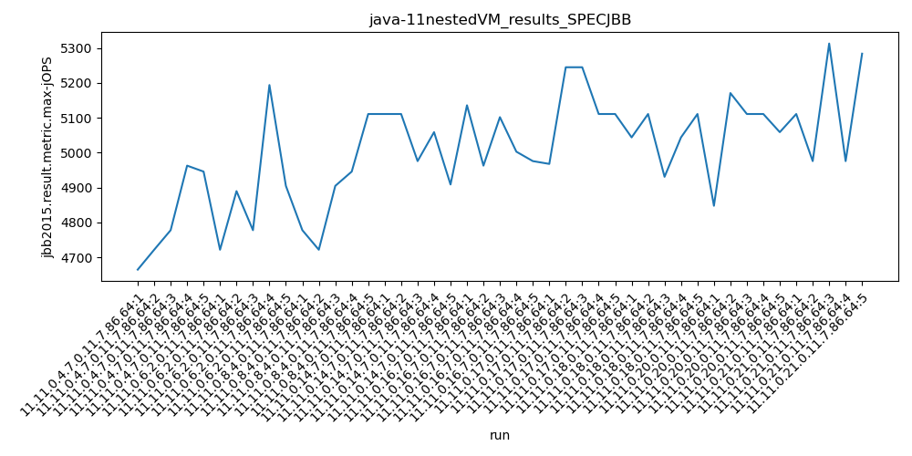
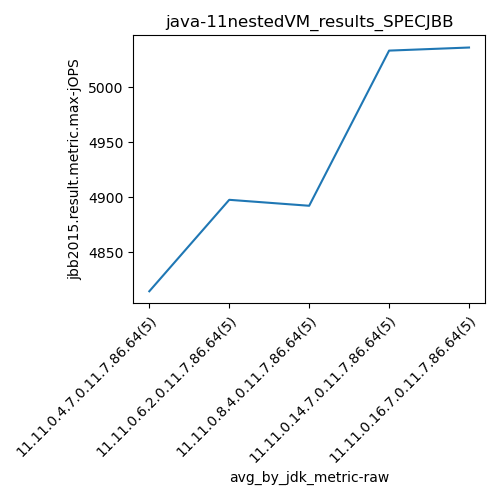
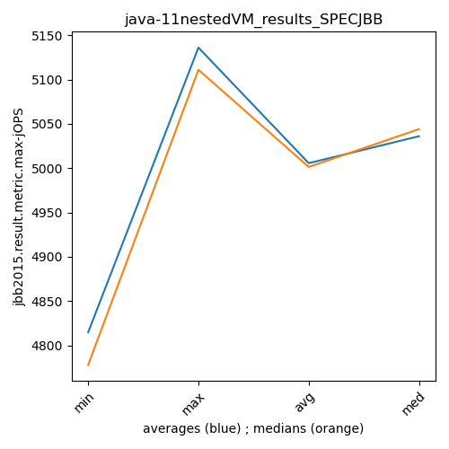
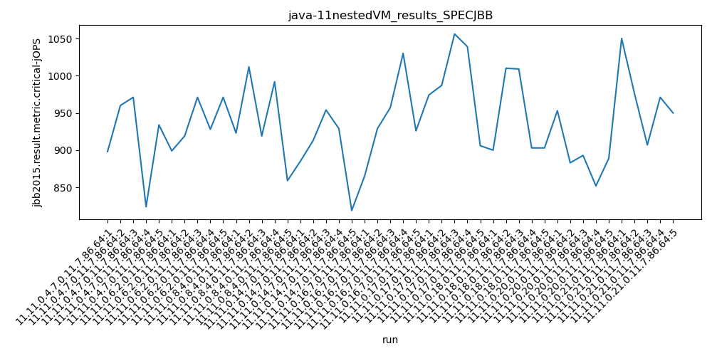
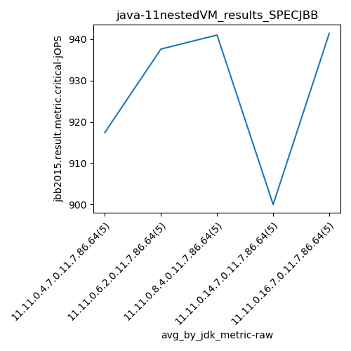
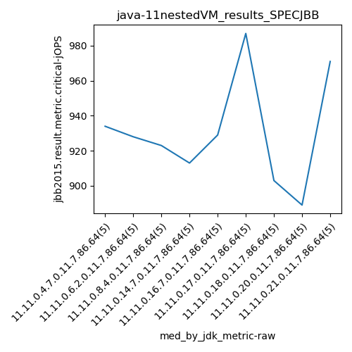
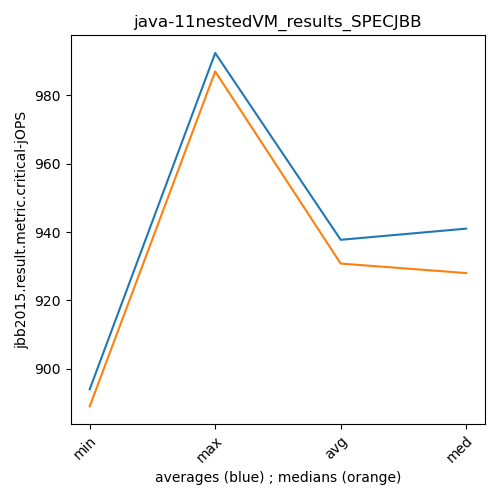

java-11 SPECJBB
Context at bottom
/home/jvanek/git/benchmarks-in-nested-virtualisation-toolchain/final_results/nestedVM_results/nestedVM_results_DACAPO
java-11
SPECJBB
/home/jvanek/git/benchmarks-in-nested-virtualisation-toolchain/final_results/nestedVM_results/nestedVM_results_J2DBENCH
java-11
SPECJBB
/home/jvanek/git/benchmarks-in-nested-virtualisation-toolchain/final_results/nestedVM_results/nestedVM_results_RADARGUNs3
java-11
SPECJBB
/home/jvanek/git/benchmarks-in-nested-virtualisation-toolchain/final_results/nestedVM_results/nestedVM_results_SPECJBB
java-11
SPECJBB
nestedVM_results_SPECJBB
- nestedVM_results_SPECJBB - max-jops
- nestedVM_results_SPECJBB - critical jops
nestedVM_results_SPECJBB - max-jops
Expected number of java-11 JDKs: 5
1st avgmed_alljdks_metric:
/home/jvanek/git/benchmarks-in-nested-virtualisation-toolchain/final_results/result_processing.py /home/jvanek/git/benchmarks-in-nested-virtualisation-toolchain/final_results/nestedVM_results/nestedVM_results_SPECJBB jbb2015.result.metric.max-jOPS False
values: [4665, 4722, 4778, 4963, 4946, 4722, 4890, 4778, 5194, 4905, 4778, 4722, 4905, 4946, 5111, 5111, 5111, 4976, 5059, 4909, 5136, 4963, 5102, 5003, 4976]

Expected number of iterations: 5
final number of values: 25 out of 25
Pass rate: 100.0%
values: (4665, 5194, 4934.84, 4946)

** accuracy from all jdks and runs
more is better
MIN: 4665
MAX: 5194
AVG: 4934.84
MED: 4946
Relative differences 1:
MIN-MAX: 10.0 %
MIN-AVG: 5.0 %
MIN-MED: 6.0 %
MAX-MIN: -11.0 %
MAX-AVG: -5.0 %
MAX-MED: -5.0 %
AVG-MED: 0.0 %
stored to java-11.properties. sort | uniq that!
2nd avgmed_by_jdk_metric:
values: [4814.8, 4897.8, 4892.4, 5033.2, 5036.0]

values: [4778, 4890, 4905, 5059, 5003]

values: (4814.8, 5036.0, 4934.84, 4897.8)
values: (4778, 5059, 4927.0, 4905)

** accuracy from all jdks where runs were avged
more is better
MIN: 4814.8
MAX: 5036.0
AVG: 4934.84
MED: 4897.8
Relative differences 1:
MIN-MAX: 4.0 %
MIN-AVG: 2.0 %
MIN-MED: 2.0 %
MAX-MIN: -5.0 %
MAX-AVG: -2.0 %
MAX-MED: -3.0 %
AVG-MED: -1.0 %
stored to java-11.properties. sort | uniq that!
** accuracy from all jdks where runs were medianed
more is better
MIN: 4778
MAX: 5059
AVG: 4927.0
MED: 4905
Relative differences 1:
MIN-MAX: 6.0 %
MIN-AVG: 3.0 %
MIN-MED: 3.0 %
MAX-MIN: -6.0 %
MAX-AVG: -3.0 %
MAX-MED: -3.0 %
AVG-MED: -0.0 %
stored to java-11.properties. sort | uniq that!
nestedVM_results_SPECJBB - critical jops
Expected number of java-11 JDKs: 5
1st avgmed_alljdks_metric:
/home/jvanek/git/benchmarks-in-nested-virtualisation-toolchain/final_results/result_processing.py /home/jvanek/git/benchmarks-in-nested-virtualisation-toolchain/final_results/nestedVM_results/nestedVM_results_SPECJBB jbb2015.result.metric.critical-jOPS False
values: [898, 960, 971, 824, 934, 899, 919, 971, 928, 971, 923, 1012, 919, 992, 859, 885, 913, 954, 929, 819, 865, 929, 957, 1030, 926]

Expected number of iterations: 5
final number of values: 25 out of 25
Pass rate: 100.0%
values: (819, 1030, 927.48, 928)

** accuracy from all jdks and runs
more is better
MIN: 819
MAX: 1030
AVG: 927.48
MED: 928
Relative differences 1:
MIN-MAX: 20.0 %
MIN-AVG: 12.0 %
MIN-MED: 12.0 %
MAX-MIN: -26.0 %
MAX-AVG: -11.0 %
MAX-MED: -11.0 %
AVG-MED: 0.0 %
stored to java-11.properties. sort | uniq that!
2nd avgmed_by_jdk_metric:
values: [917.4, 937.6, 941.0, 900.0, 941.4]

values: [934, 928, 923, 913, 929]

values: (900.0, 941.4, 927.4799999999999, 937.6)
values: (913, 934, 925.4, 928)

** accuracy from all jdks where runs were avged
more is better
MIN: 900.0
MAX: 941.4
AVG: 927.4799999999999
MED: 937.6
Relative differences 1:
MIN-MAX: 4.0 %
MIN-AVG: 3.0 %
MIN-MED: 4.0 %
MAX-MIN: -5.0 %
MAX-AVG: -1.0 %
MAX-MED: -0.0 %
AVG-MED: 1.0 %
stored to java-11.properties. sort | uniq that!
** accuracy from all jdks where runs were medianed
more is better
MIN: 913
MAX: 934
AVG: 925.4
MED: 928
Relative differences 1:
MIN-MAX: 2.0 %
MIN-AVG: 1.0 %
MIN-MED: 2.0 %
MAX-MIN: -2.0 %
MAX-AVG: -1.0 %
MAX-MED: -1.0 %
AVG-MED: 0.0 %
stored to java-11.properties. sort | uniq that!
/home/jvanek/git/benchmarks-in-nested-virtualisation-toolchain/final_results/nestedVM_results/nestedVM_results_RADARGUNs1
java-11
SPECJBB
/home/jvanek/git/benchmarks-in-nested-virtualisation-toolchain/final_results/nestedVM_results/nestedVM_results_JMH
java-11
SPECJBB
pass rates:
nestedVM_results_SPECJBB=100.0%
Context:
- nestedVM_results
- SPECJBB